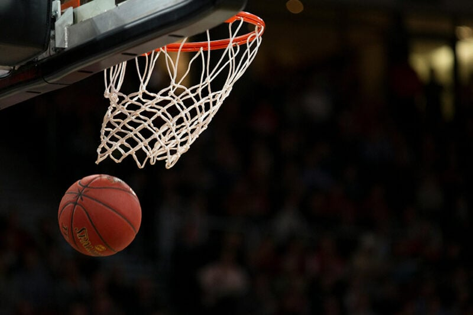
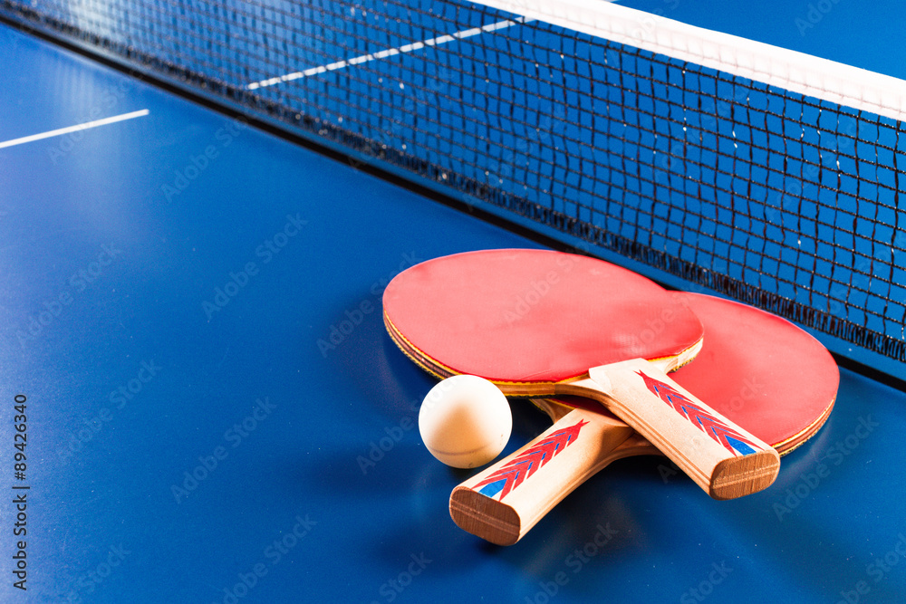
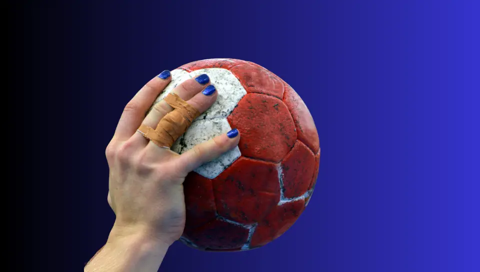
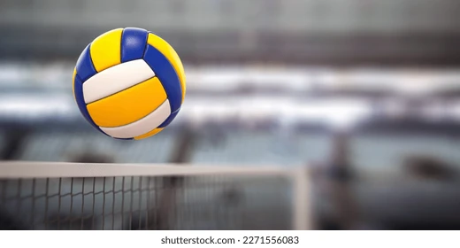

Sobre Mim
.jpg) Sou João Alves, tenho 15 anos e atualmente estou no 1º ano do ensino médio. Moro em Arapongas, estado do parana, e estudo no Colégio sesc,
sou apaixonado por tecnologia,esportes e exercicios .
Sou João Alves, tenho 15 anos e atualmente estou no 1º ano do ensino médio. Moro em Arapongas, estado do parana, e estudo no Colégio sesc,
sou apaixonado por tecnologia,esportes e exercicios .Gosto muito de esportes como:.

Basquete

Tênis de mesa

Handebol

Vôlei